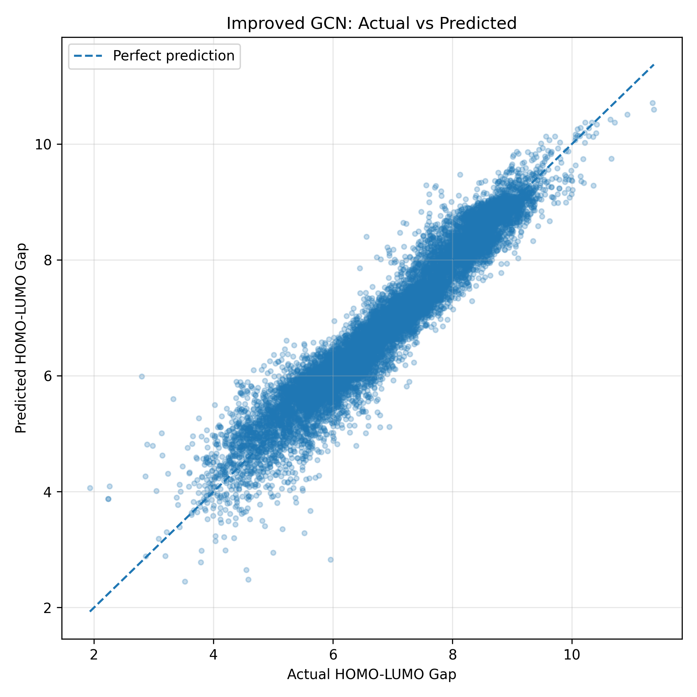
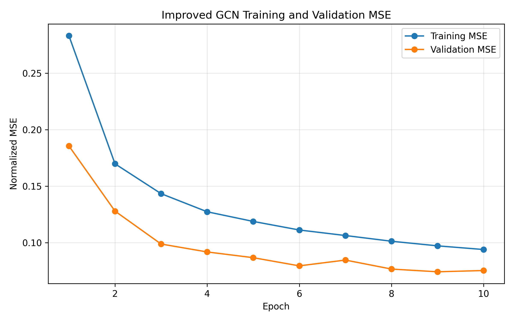
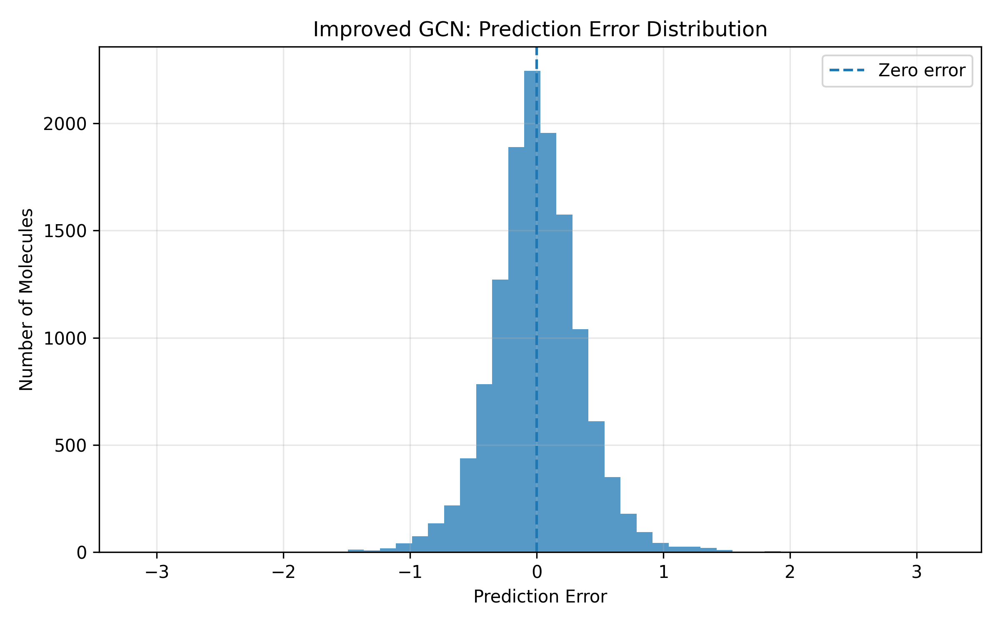
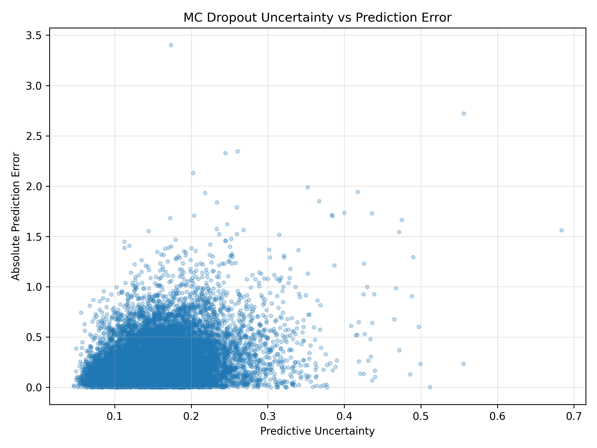
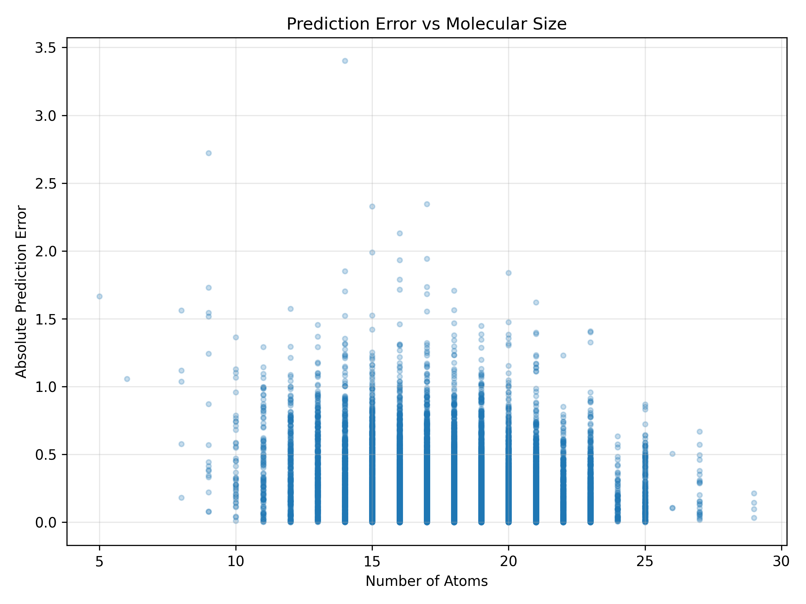
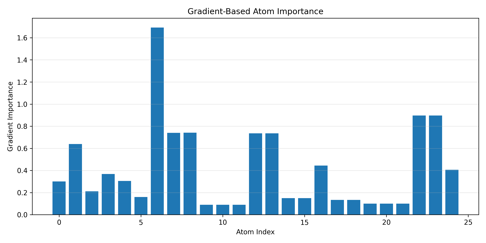

Predict a property. Inspect the confidence.
Graph neural network molecular property prediction with test-time Monte Carlo Dropout epistemic uncertainty quantification. Formulates SMILES into node and edge tensor representations, propagates chemical context across 3 GCN layers, and returns excitation energy gaps.
Ready for inference
Enter a valid SMILES string such as CCO or select from reference substrates to compute quantum excitation properties.
Find a molecular starting point.
Curated representative chemical entities from the QM9 benchmark containing up to 9 heavy atoms (C, N, O, F). Property values provide validated quantum chemical ground truths and calibrated baseline metrics.
Every prediction should show its work.
Backpropagates loss gradients to atom feature representations, identifying localized electron density and topological contributions to the excitation energy band.
Atom attribution scores reflect gradient-weighted chemical connectivity and localized electronegativity. Atoms possessing high frontier orbital density exhibit elevated weight coefficients.
Graph Encoding & Tensor Representation
Transforms SMILES into node attribute tensor X (dim 11) encoding atomic number, hybridization, formal charge, aromaticity, and valency alongside edge tensor A.
GNN Message Passing Dynamics
Propagates localized degree neighborhoods through normalized graph Laplacian D^{-1/2} A D^{-1/2}. Readout layer applies global mean pooling.
Frontier Molecular Orbital (FMO) Theory
Conjugated π-orbitals and electronegative heteroatom lone pairs modulate HOMO and LUMO energy eigenvalues, directly governing the electronic excitation band.
Monte Carlo Dropout Epistemic Variance
50 test-time stochastic forward passes with dropout rate p=0.2 quantify epistemic parameter uncertainty, isolating high-residual out-of-distribution molecules.
Measure the trade-offs.
Empirical benchmarks across held-out randomized QM9 test split (N=13,084, 10%). Comparing baseline GCN against GraphSAGE sampling, GAT attention, and modified GCN experiments.
| ARCHITECTURE | MAE (eV) | RMSE (eV) | R² SCORE |
|---|---|---|---|
| GCN | 0.249 | 0.333 | 0.934 |
| GraphSAGE | 0.255 | 0.348 | 0.927 |
| Improved GCN | 0.265 | 0.356 | 0.924 |
| GAT (Attention) | 0.652 | 0.829 | 0.588 |
Actual vs Predicted Fit
R² = 0.934
Training & Validation MSE
Convergence
Error Distribution
Residuals
Uncertainty vs Error
Correlation 0.22
Error vs Molecule Size
Topology
Atom Saliency Map
Attribution
Ask the project.
Context-aware assistant trained on the QM9 dataset, GNN model parameters, and MC Dropout uncertainty distributions. Ask questions regarding molecular features or architecture tradeoffs.
The assistant analyzes active workspace SMILES structures, compares GNN architectures, and details test-time Monte Carlo Dropout uncertainty bounds.
System architecture & pipeline methodology.
Complete computational specification of node feature tensors, graph Laplacian neighborhood aggregation, and epistemic uncertainty quantification across the QM9 quantum chemical dataset.
11-D Atom Features
Atomic number (H, C, N, O, F), hybridization (sp, sp², sp³), formal charge, aromaticity, and valency degree form the node feature matrix X ∈ ℝ^{N×11}.
GNN Message Passing
GCN aggregates normalized localized degree neighborhoods via D^{-1/2} A D^{-1/2}. Evaluated against GraphSAGE sampling and GAT attention architectures.
MC Dropout Epistemic Variance
Test-time stochastic forward passes (p=0.2) quantify parameter variance, stratifying high error molecules (MAE 0.306 eV vs 0.243 eV).
Gradient Attribution
Backpropagates loss gradients to atom features, producing interpretable L2 attribution maps across conjugated systems and heteroatoms.